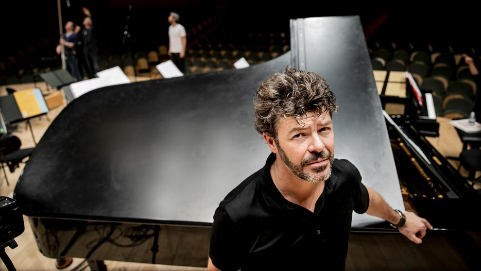
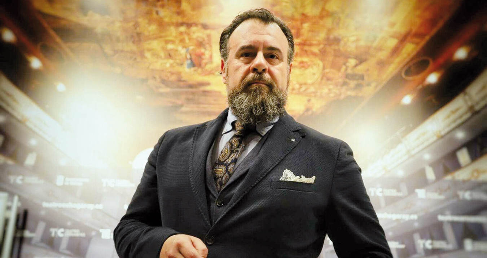
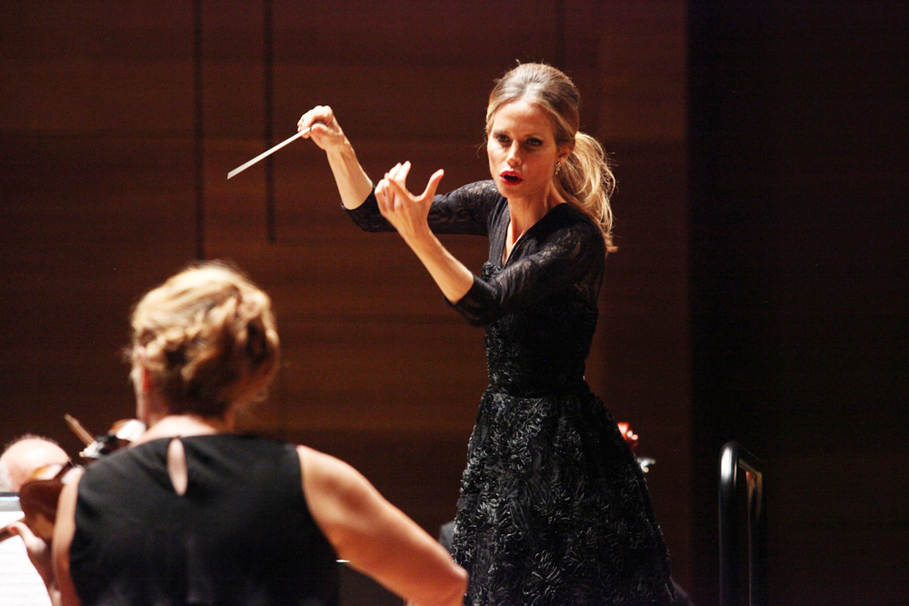

Pablo Heras-Casado
Nacido en Granada en 1977. Comenzó cantando en el coro escolar y aprendiendo piano a los 9 años. Estudió dirección orquestal e historia del arte. Es el fundador de la Orquesta Barroca de Granada y del Ensemble SONÓORA de música contemporánea. Recibió el Premio Nacional por su composición "La mitad de la verdad está en los ojos". En 2011 fue nombrado director principal de la Orchestra of St. Luke's por un periodo de cuatro años. En 2012 le fue otorgada la Medalla al Honor de la Fundación Rodríguez Acosta. En 2013 dirigió por primera vez la Orquesta Filarmónica de Múnich, la Orquesta del Mozarteum de Salzburgo y la Orquesta de la Gewandhaus de Leipzig. En 2014 vio la luz una nueva grabación con el sello harmonia mundi, en la que Heras Casado dirige la Sinfonía nº2 de Mendelssohn. Nombrado Director del Año por Musical America en ese mismo año. En 2016 dirigió por primera vez la Orquesta Filarmónica de Viena y la Orquesta Sinfónica de la Radio Sueca. En 2018 fue distinguido como Caballero de la Orden de las Artes y las Letras del gobierno francés, así como Embajador Solidario 2019 de la Fundación Ayuda en Acción. El 9 de junio del pasado año celebró su 1000º concierto.
Estos son algunos de los componentes de su innumerable repertorio:

| Autor |
Obra |
| Castel |
La fontana del placer |
| David del Puerto |
Boreas |
| Schubert |
Sinfonía nº7 |
| Verdi |
Baritone Arias |
| Donizetti |
L'elisir d'amore |
| Schumann |
Concierto para Piano |
| Shostakóvich |
Conciertos para violonchelo |
| Sotelo |
El Público |
| Wagner |
Der fliegende Holländer |
Carlos Álvarez
Nacido en Málaga en el año 1966. Estudió en el conservatorio de su ciudad natal, compatibilizándolo con sus estudios de Medicina, los cuales finalmente abandonó para dedicarse al canto. Debutó en el Teatro de la Zarzuela de Madrid con "La del Manojo de Rosas", de Pablo Sorozábal. Ha cantado en los principales teatros del mundo, como son el Covent Garden de Londres y el Metropolitan Opera de Nueva York. Sus mayores triunfos los ha obtenido cantando en la Staatsoper de Viena, con piezas como el Fígaro de "Il barbiere di Siviglia". Otros escenarios en los que destacó son los de Zúrich, Ginebra, Amsterdam, Rávena, Chicago y Florencia. En 2004 estrenó un Macbeth ambientado en la Primera Guerra Mundial, dirigido por López Cobos. En 2006 intervino junto a Monserrat Caballé en el homenaje al barítono Manuel Ausensi en el Liceo. Álvarez cuenta con el cariño y la admiración del público del coliseo lírico andaluz, siendo uno de los cantantes predilectos del Teatro de la Maestranza de Sevilla. Recibe en 2006 un Premio Grammy a la mejor grabación de ópera en directo, por "Falstaff" de Verdi.
Algunas de sus piezas:
| Autor |
Obra |
| Mozart |
Don Giovanni |
| Verdi |
Otello |
| Donizetti |
Roberto Devereux |
| Verdi |
Rigoletto |
| Bellini |
I Puritani |
| Puccini |
Madama Butterfly |
| Shakespeare |
Macbeth |
| Leoncavallo |
Pagliacci |
| Donizetti |
L'elisir d'amore |

Inma Shara
Inmaculada Lucía Saratxaga nace en 1972. Estudió en el conservatorio de música de Bilbao y de Vitoria. Debutó como directora de orquesta en 1999, con 27 años. En 2007 fue elegida miembro de número de Jakiunde, Academia de las Ciencias, de las Artes y de las Letras del País Vasco. Fue la primera mujer que dirigió un concierto en el Vaticano, con motivo del 60º aniversario de la Declaración Universal de los Derechos Humanos. En 2009 fue galardonada con el premio a la Excelencia Europea "por su proyección internacional y su aportación a la música clásica". Fue nombrada "Embajadora Honoraria de la Marca España", premio concedido por el Foro de Marcas Renombradas por ser una de las más brillantes representates de la nueva generación de directores de orquesta en España. En 2010 fue invitada por la Comisión Europea y la SEEI para dirigir el concierto de clausura del Día de Europa. Desde 2007 colabora con la marca de relojes suizos Vacheron Constantin como imagen mundial de la empresa. Dirigió un concierto en Madrid, con la asistencia de la Reina Sofía, cuyos beneficios fueron destinados a la Fundación Reina Sofía para el proyecto Alzheimer. Dirigió el concierto solidario "A Team For The World, África" en 2013, en el Auditorio Nacional de Música de Madrid, en una solidaria iniciativa que pretendía apoyar los proyectos de Harambee.
Aquí se presentan algunos de sus logros, en forma de orquestas dirigidas y libros publicados:

| Orquestas |
Libros |
| Filarmónica de Londres |
La isla de los sonidos |
| Filarmónica de Israel |
La batuta invisible |
| Sinfónica Checa |
|
| Sinfónica de Taiwán |
|
| Sinfónica Rusa |
|
| Sinfónica de Lituania |
|
| Sinfónica de Roma |
|
| Sinfónica de Ucrania |
|
| Camerata Pro Arte |
|